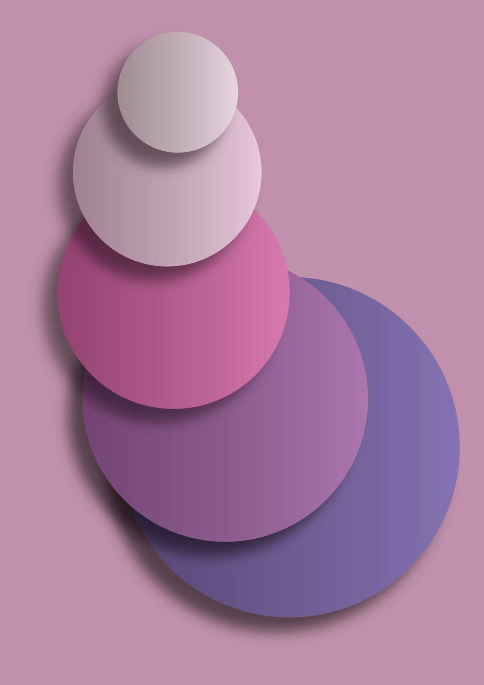

Egg freezing pauses the clock on a set of your eggs at today's age, roughly two weeks, start to finish.
- Initial consultation and fertility assessment
- Approximately 10 to 12 days of hormone stimulation
- Monitoring scans and blood tests
- Egg collection under light sedation
- Egg freezing using vitrification technology
Flexible startYou don't have to wait for a particular day of your cycle. With a random start, stimulation can begin at almost any point, useful when timing matters or you want to start right away.
The stimulation cycle
What happens, day by day
Egg freezing follows a short, carefully timed hormone cycle. Step through the days alongside a live follicular tracking scan.
Example follicular tracking scan (illustrative).
Day 0start
Stimulation begins
After a baseline scan and blood test, daily hormone injections (follicle stimulating hormone) start at home. They encourage a group of follicles to grow together, rather than the single follicle of a natural month.
Leading follicle≈ 5 mmWhat you take, and when
After collection
Vitrification
Mature eggs are flash frozen within hours using vitrification, a rapid method that avoids ice crystal damage.
Storage
Frozen eggs are held safely and do not age while frozen. They can be stored for years.
Future use
When the time is right, eggs are thawed, fertilised with sperm by ICSI, and the embryo is transferred.
This illustrates a typical antagonist cycle for egg freezing. The scan shown is an example for illustration. Timing and protocols vary between people and clinics, and a plan is always tailored to the individual. The days shown are a guide, not a fixed schedule.
.jpg)